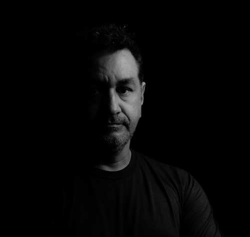

Olá! Meu nome é Robério Diógenes e tenho o prazer de me apresentar a você. Sou Professor de Informática na Way Cursos, onde compartilho meu conhecimento e paixão pela tecnologia com meus alunos. Além disso, sou Fotógrafo de Moda, área em que venho atuando há alguns anos.
Meu background em Marketing me permite entender a importância da imagem em diversas áreas, incluindo a moda. Minha experiência profissional inclui trabalhos na H'art 7 agência fotográfica e como freelancer, o que me permitiu aprimorar minhas habilidades e desenvolver minha criatividade.
Meus cursos de Fotografia Avançada na Travessa da Imagem, Fotografia de Moda no SENAC, Fotografia Newborn, Fotografia Documental e Fotografia em Cusco, me proporcionaram uma ampla visão do mundo da fotografia e me permitiram aprimorar técnicas e estilos.
Também tive o prazer de fotografar para diversas marcas, como 7 Meninas, Zilook e Madama, e estou sempre buscando novos desafios e oportunidades para aprimorar minhas habilidades.
Se você precisa de um profissional experiente e criativo para trabalhos de fotografia de moda, conte comigo. Será um prazer poder colaborar com você e contribuir para o sucesso do seu projeto.
